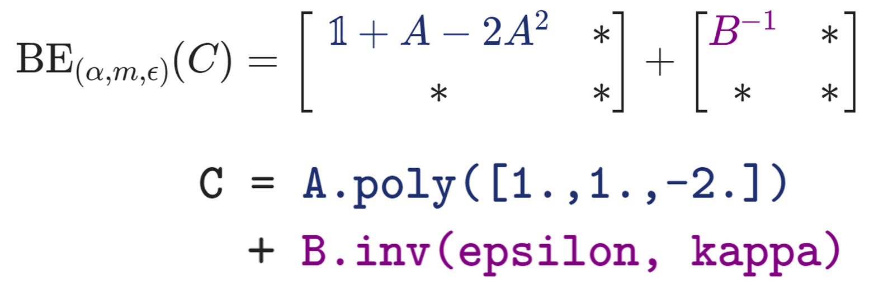

Block Encodings#
Qrisp’s BlockEncoding provides a high-level programming abstraction for Quantum Linear Algebra. The core strength of this interface lies in its ability to translate classical matrix operations for non-unitary matrices directly into their quantum equivalents, significantly lowering the barrier to entry for quantum algorithm development. To learn more about this, please refer to the two part tutorial on how to use the BlockEncoding class and its applications.
{kind=link}

The Abstraction Layer for Quantum Linear Algebra#
Instead of navigating the intricacies of superposition and entanglement, users can work within the familiar language of linear algebra and signal processing. The block-encoding layer acts as a bridge that makes matrices “accessible” to the quantum comuter. It is important to note that the overall efficiency of an algorithm critically depends on the performance of its underlying block-encodings. While Qrisp currently offers versatile, general-purpose constructors, additional specialized block-encodings will be introduced in future.
Once encoded, these operators can be manipulated using two powerful paradigms:
Matrix Arithmetic: Block-encodings can be added and multiplied, enabling the construction of complex Hamiltonians or large-scale linear systems from simpler building blocks. This algebraic flexibility allows for the modular construction of composite operators.
Spectral Transformation & Signal Processing: Beyond simple arithmetic, the spectral properties of an encoded operator can be directly transformed. This allows for the application of non-linear functions to an operator’s spectrum, enabling complex operations such as matrix inversion or time evolution. By adopting concepts from signal processing—specifically through the use of polynomial filters—one can isolate specific energy ranges.
These abstractions help bridge the gap for domain experts in fields like machine learning, scientific computing, and computational dynamics, allowing them to design quantum algorithms using the mathematical tools they already master.
NumPy-like syntax#
Let us consider two Hermitian matrices \(A\) and \(B\) and evaluate the matrix expression
applied to a vector \(\vec{b}\). Frist, we define the matrices as NumPy arrays and their respective BlockEncoding representations.
# For larger systems, restart the kernel and adjust simulator precision
# import os
# os.environ["QRISP_SIMULATOR_FLOAT_THRESH"] = "1e-10"
import numpy as np
from qrisp import *
from qrisp.block_encodings import BlockEncoding
A = np.array([[ 0.66, 0.02, -0.11, -0.16],
[ 0.02, 0.82, 0.01, -0.12],
[-0.11, 0.01, 0.93, -0.07],
[-0.16, -0.12, -0.07, 0.69]])
B = np.array([[ 0.78, -0.01, -0.16, -0.1 ],
[-0.01, 0.57, -0.03, 0.08],
[-0.16, -0.03, 0.69, -0.15],
[-0.1 , 0.08, -0.15, 0.88]])
b = np.array([1., 2., 1., 1.])
epsilon = 0.001
kappa = np.linalg.cond(B)
B_A = BlockEncoding.from_array(A)
B_B = BlockEncoding.from_array(B)
Next, we evalute the matrix expression using NumPy and Qrisp:
C = np.eye(4) + A - 2 * A @ A + np.linalg.inv(B) # NumPy
B_C = B_A.poly([1.,1.,-2.]) + B_B.inv(epsilon, kappa) # Qrisp
Notably, Qrisp enables developers to focus on the mathematical logic of an algorithm rather than its quantum implementation, leveraging a NumPy-like syntax that aligns with standard tools for numerical computing.
Finally, we compare the results, demonstrating that the implementation requires only a minimal amount of quantum-specific code.
# Normalize for comparison to quantum solution.
c = C @ b / np.linalg.norm(C @ b)
print("numpy: ", c)
# numpy: [0.44707785 0.66049416 0.41341197 0.43927144]
We define a function that prepares a QuantumFloat in state \(\ket{b}\propto b_0\ket{0}+b_1\ket{1}+b_2\ket{2}+b_3\ket{3}\) and apply the block-encoded operator \(C\) using Repeat-Until-Success. In general, implementing non-unitary Hermitian operators on a quantum computer is a probabilistic process that requires a repeat-until-success strategy to ensure the desired operation has been correctly applied.
# Prepare variable in state |b>
def prep_b(b):
qv = QuantumFloat(2)
prepare(qv, b)
return qv
@terminal_sampling
def main(b):
# Applies the Hermitian operator C to state |b>
# using a repeat-until-success protocol.
return B_C.apply_rus(prep_b)(b)
res_dict = main(b)
# Convert measurement probabilites to (absolute values of) amplitudes.
amps = np.sqrt([res_dict.get(i, 0) for i in range(len(b))])
print("qrisp:", amps)
# qrisp: [0.44630489 0.66211377 0.41182956 0.43910558]
The results agree within the approximation error of the quantum matrix inversion.